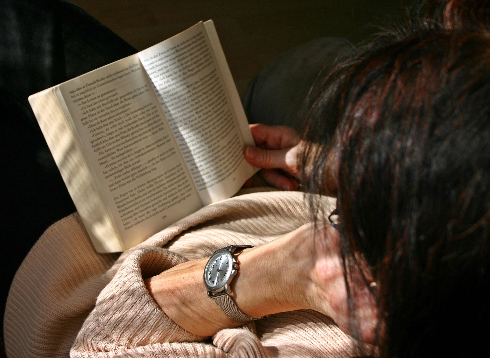

7 способов увеличить скорость чтения.
Воспользовавшись хотя бы 3-мя способами из 7-ми, Вы увеличите скорость своего чтения на 20%-40%.
Конечно есть разные цели чтения, одна цель просто для развлечения, другая цель вытянуть из книги или прочего ресурса, - нужную информацию. Наши способы направлены на практическое применение книги, т.е. взять от ресурса информацию к применению.

- Концентрация. Сделайте так что бы Вас не чего,- не отвлекало. Найдите комфортное место.
Воспользуйтесь одной из техник для концентрации. Это не займет у Вас много времени.
- Техника "Апельсин". Закрываем глаза, представляем как можно ярче апельсин, в деталях: масса, объём, запах, попробуйте его мысленно пощупать, затем мысленно помещаем его за затылком, и приступаем к работе.
- Техника "Кристальный квадрат". Представляем квадрат,
* на его левой стороне, - вдыхаем в течении 3-х секунд,
* на его верхней стороне, - задерживаем дыхание в течении 3-х секунд,
* на его правой стороне, - выдыхаем в течении 3-х секунд,
* на его нижней стороне, - задерживаем дыхание в течении 3-х секунд, и так повторяем трижды.
- Цель. Определитесь с Целью, ответьте себе на вопросы:
* какие факты(информация) мне нужны из данного информационного ресурса?(можно выписать на лист, и когда получаете ответ пишите в тот же лист).
* если есть практика, значит получая инструменты, Вы будете их применять(практиковаться). Важно разделить чтение и практику по возможности. Помните читать нужно для применения, а не для знания. Постарайтесь выбирать реально полезные вещи, перестаньте думать что, - "я должен знать всё", возьмите в свою жизнь то что реально важно для Вас. - Интервью. Читая представьте, что Вы берете интервью у специалиста в данной области. Критикуйте и находите полезные факты и способы. Тут нужно понимать что перед Вами не единственно верный ресурс, бывают факты ошибочны, изложены неверно или просто непрактично изложены.
- Эффективность. Будьте эффективны, а не результативны. Не старайтесь делать быстро, "быстрее чем Вы можете не получится", - как бы странно это не звучало). Читайте эффективно, а не быстро. В первую очередь нужно развивать навык, выборочного эффективного чтения, во вторую очередь навык быстрого чтения.
- Выборочность. Будьте избирательны. В оглавлении книги или др. ресурса, выберите то что будете разбирать(читать) в первую очередь, затем во вторую, и вычеркните то что Вам совсем не нужно. Как правило, в хорошей книге важное выделено большими заголовками, задним фоном, подчеркиванием, но опять же сверяйтесь с тем что для Вас важно. Пропускайте главы с благодарностью, уже понятые темы, параграфы, примеры.
- Активность. Будьте активным читателем, книга это инструмент, пользуйтесь:
* маркером-выделителем, - выделяйте то что важно
* бумажными стикерами, - помечайте нужные места в книге
* делайте заметки на полях, или в блокнот, или на лист
* загибайте страницы, подчеркивайте, заносите важную инфу в скобки.
Для удобства можно вести по строкам карандашом, и сразу подчеркивать.
- Понимание. Старайтесь перевести написанное на свой язык, перепишите своими словами то что написано невнятно или специфическими словами. Не бойтесь разобрать информацию поискав значение слов или зарисовав на листке, человек мыслит в большей части визуально, визуальное мышление так же является очень быстрым и ярким. Рисуйте майнд-карты(смысловые карты), загуглите Николай Ягодкин или Брайн Трейси. Майнд-карты это очень сильный инструмент.


Причины медленного чтения.
- * Регрессия(перечитывание части текста несколько раз). Если перечитывать,- то весь абзац, но так не всегда), просто стараемся не перечитывать
- * Рассеянность внимания, недостаток концентрации, - как правило здесь причиной являются отвлекающие факторы и усталость.
- * Непонимание того что читаешь, так бывает в основном из-за сложности текста, тут нужно остановится и немного подумать, а не слишком ли высока планка. Есть такая аллегория, - "Лучше не трогаться на авто с пятой скорости, очень долго разгоняться или можно сломаться". В одной информативной области желательно начинать с простых книг например учить английский язык лучше начать с книг,- для дошкольников, затем книги начальных классов и т.д.
P.S. "Практика решает всё",- научится быстро читать, - это значит получить навык который сделает Вас экспертом в своей области, и поможет быстрее достигать своих целей.
P.S.S. Так же есть программы для быстрого чтения, возможно этот вариант подойдет именно Вам. SpeedRead На той же странице можно бесплатно скачать,- это приложение для Вашего мобильника.